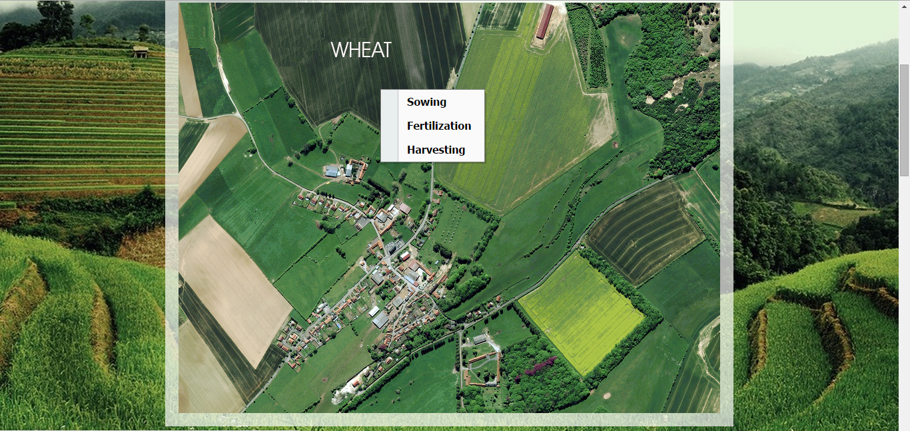

Agrarian Development
A platform to manage your own Fields | Crops | Farms
Basic
A little spice
Toggle navigation
Agrarian Development
Home
About
USER GUIDLINE
Contact
User
Guidance 5

Selection of a Methodology
Right click on selected crop will display a popup menu.
From that popup menu you can select the method for feeding the data.
← Older